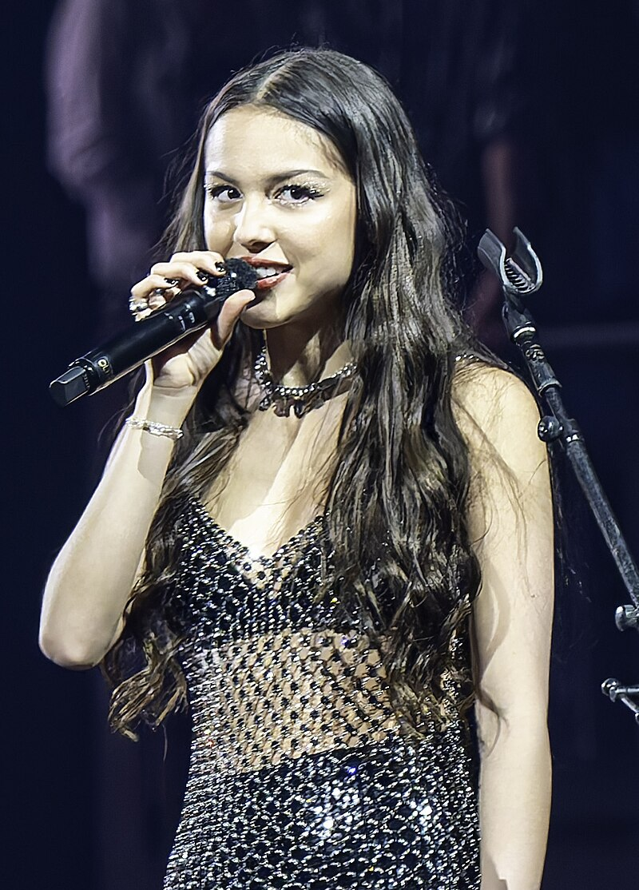

|  | Name | Olivia Isabel Rodrigo |
|---|---|---|
| Also Known as | Olivia Rodrigo | |
| Born | February 20, 2003, in Murrieta, California, U.S | |
| Nationality | Filipino-American | |
| Occupation | Singer, Songwriter, Actress | |
| Works | Discography, Songs, Performances | |
| Instruments | Vocals, Piano, Guiter | |
| Year Active | 2015- present | |
| Height | 5'5" (165 cm) | |
| Website | store.oliviarodrigo |
Olivia Isabel Rodrigo was born on February 20, 2003, in Murrieta, California. Rodrigo grew up in Temecula, California, with her parents: Jennifer, a teacher, and Chris, a family and marriage therapist.Olivia’s mother has German and Irish heritage, and her father is of Filipino descent. Rodrigo is proud to be a biracial Filipino American but has confessed she didn’t always feel that way: “Me and my other more ethnic friends grew up in this world where we thought that being a white girl would be better, and you’d be happier, and people would like you more.”Olivia Rodrigo at age 12. When Rodrigo was a child, her mother introduced her to alternative rock such as No Doubt, the White Stripes, and Smashing Pumpkins. Rodrigo herself showed an early affinity for music. At age 5, she started singing lessons; she was soon competing in local contests and talent shows. She was also writing songs at a young age. When Rodrigo was 9, she began piano lessons. She initially hated studying the piano but came to appreciate that the instrument helped with her songwriting. Rodrigo’s youthful songwriting compositions often focused on heartbreak, even before she’d had a boyfriend. “I literally wrote breakup songs before I ever held a boy’s hand,” she told People.In addition, Rodrigo displayed a passion for acting, taking classes by the time she turned 6. She had roles in school productions but also started to audition for professional jobs. To do this, her parents would take her on a 90-mile trek to Los Angeles. Rodrigo wasn’t an overnight success. Her parents, who hadn’t pushed her to become a child actor, told their daughter she could stop auditioning. However, she was determined to continue.
In 2015, at age twelve, Rodrigo made her acting debut portraying the lead role of Grace Thomas in direct-to-video film An American Girl: Grace Stirs Up Success. She attended Dorothy McElhinney Middle School in Murrieta for a year, until moving to Los Angeles after landing an acting role in Disney Channel's Bizaardvark in 2016; she was homeschooled from then until her graduation in 2021. Starring as the character Paige Olvera, a guitarist, she played the role for three seasons.In February 2019, she was cast in the starring role of Nini Salazar-Roberts on the Disney+ series High School Musical: The Musical: The Series, which premiered in November of that year. Rodrigo was praised for her performance, with Joel Keller from Decider describing her as "especially magnetic". For the series, Rodrigo wrote and performed the promotional single "All I Want", released in November 2019.[31][32] She left the show at the end of its third season to focus on her music career.
Rodrigo has named Taylor Swift and Lorde as her idols and primary musical inspirations, and once dubbed herself Swift's biggest fan "in the whole world". Rodrigo later went on to give interpolation credits to Swift and Jack Antonoff on her song "1 Step Forward, 3 Steps Back" and retroactively credited Swift, Antonoff and Annie Clark on her song "Deja Vu". In 2022, she called the White Stripes band member Jack White her "hero of all heroes". Other stated influences on Rodrigo's debut studio album included Alanis Morissette, Kacey Musgraves, Fiona Apple, St. Vincent, Cardi B, Gwen Stefani, Avril Lavigne, and Lana Del Rey.Guts was primarily inspired by her punk and alternative rock influences, including Babes in Toyland and Rage Against the Machine.
Rodrigo's voice type is soprano. Media outlets generally describe her as a pop artist, with songs ranging from pop rock, teen pop, and indie pop styles, as well as 1990s alternative rock. Rodrigo stated that she wants to be a songwriter and not "the biggest pop star that ever lived", and she chose to sign with Interscope/Geffen Records because its CEO John Janick praised her songwriting, not her "potential star quality". Music journalist Laura Snapes called Rodrigo a "flag-bearer" for a new wave of songwriters who incline towards power ballads "that are as emotional as ever, but project that emotion inward, trading bombast for hush", and described her musical style as rooted in heartache, mental health, and sadness, without being melodramatic, expressing more realistic perspectives than resilient.
Main articles: Olivia Rodrigo’s Discography and List of songs recorded by Olivia Rodrigo
List of Film
| Year | Title | Role | Notes |
|---|---|---|---|
| 2015 | An American Girl: Grace Stirs Up Success | Grace Thomas | Direct-to-video film |
| 2021 | Sour Prom | Herself | Concert film |
| 2022 | Olivia Rodrigo: Driving Home 2 U | Herself | Domentary film |
| 2024 | Olivia Rodrigo: Guts World Tour | Herself | Concert film |